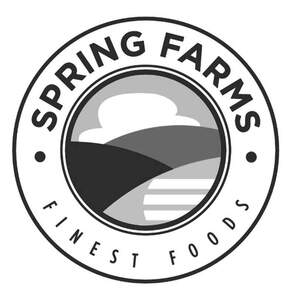
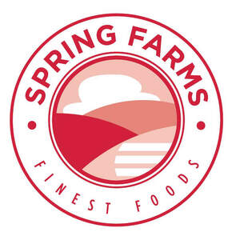

Trade Mark Journal No.2025/035 29 August 2025
UK00004253285 22 August 2025 (29,30,35)
Mark 1

Mark 2

- Class 29
- Fresh, preserved, tinned, chilled, frozen and cooked meat, meat substitutes, fish, poultry and game; meat and fish extracts; seafood, crustaceans and molluscs (not live); preserved, frozen, dried and cooked fruits, fungi, pulses and vegetables; jellies, jams, compotes; eggs, milk and milk products; edible oils and fats; prepared meals and snacks made principally from meat, meat substitutes, fish, seafood, molluscs, crustaceans, poultry or game; prepared meals and snacks made principally from processed, preserved, dried and cooked fruits, vegetables, pulses, fungi, coconut and meat substitutes; prepared salads; soups; dairy products and substitutes for dairy products; crisps; potato crisps; chips (potato, fruit or vegetable); potato dumplings; pickles; dairy, meat, fish, fruit and nut spreads; eggs; milk; edible oils, edible fats.
- Class 30
- Culinary herbs; herbal infusions; honey; seasonings; sauces; chutneys and pastes; condiments; marinades; spices; coffee; tea; cocoa; sugar; natural sweeteners; tapioca; sago; artificial coffee; bakery goods; yeast, baking powder; rice; noodles; pasta; pizzas, noodles, pies and pasta dishes; spaghetti and spaghetti-based dishes; rice-based dishes; flour and preparations made from cereals; bread; pastry; confectionery; ices; chocolate and desserts; puddings; sandwiches; wraps (sandwiches); cereal and energy bars; cereals; biscuits; cakes; spring rolls; dumplings; nut confectionery; coated nuts [confectionery]; cereal and rice based snack foods; samosas.
- Class 35
- Advertising, marketing and sales promotions; online ordering services; retail services and wholesale services connected with the sale of food, foodstuffs, groceries and beverages; organisation, operation and management of customer loyalty and incentive schemes; consultancy, information and advisory services relating to all the aforesaid services.
SYKES SEAFOOD HOLDINGS LIMITED
Representative: Bison River Limited